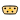

This package contains the bus definitions needed for the BusUsage example.
Extends from Modelica.Icons.InterfacesPackage (Icon for packages containing interfaces).| Name | Description |
|---|---|
|  ControlBus | Control bus that is adapted to the signals connected to it |
| Sub-control bus that is adapted to the signals connected to it |
 Modelica.Blocks.Examples.BusUsage_Utilities.Interfaces.ControlBus
Modelica.Blocks.Examples.BusUsage_Utilities.Interfaces.ControlBusThis connector defines the "expandable connector" ControlBus that is used as bus in the BusUsage example. Note, this connector contains "default" signals that might be utilized in a connection (the input/output causalities of the signals are determined from the connections to this bus).
Extends from Modelica.Icons.SignalBus (Icon for signal bus).
| Name | Description |
|---|---|
| realSignal1 | First Real signal (angular velocity) [rad/s] |
| realSignal2 | Second Real signal [m/s] |
| integerSignal | Integer signal |
| booleanSignal | Boolean signal |
| subControlBus | Combined signal |
This connector defines the "expandable connector" SubControlBus that is used as sub-bus in the BusUsage example. Note, this is an expandable connector which has a "default" set of signals (the input/output causalities of the signals are determined from the connections to this bus).
Extends from Modelica.Icons.SignalSubBus (Icon for signal sub-bus).
| Name | Description |
|---|---|
| myRealSignal | |
| myBooleanSignal |